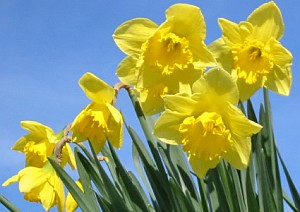
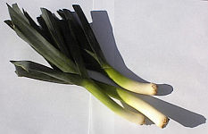
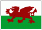

St. Hélyi n'tait pon Jèrriais - i' fut né en Belgique; Saint Patrice n'tait pon Irlandais - i' tait probabliément Gallouais; Saint André, bein seu, n'tait pon Êcossais, êtant iun des discipl'yes du Seigneu; et Saint George, li, n'tait pon Angliais - i' n'vit janmais l'Angliétèrre pa'ce qu'i' vînt d'un pays où'est qu'nou trouve la Turtchie au jour d'aniet. Ch'n'est qu'Saint Dâvi tch'est l'saint patron Britannique tchi fut né dans l'pays dé tchi qu'il est l'patron.
I' fut né en Ceredigion dans la fanmil'ye rouoyale dé chutte contrée, et i' d'vînt archêvêque. I' mouothit en 589 A.D. et fut bein vite èrconnu coumme un saint. Mais i' n'est pon connu pouor la tueûthie d'dragons, comme sén êtchivalent Angliais, ni pouor les trêfl'yes, coumme lé chein d'l'Irlande, et i' n'avait autcheun liain auve les pouothieaux ni les g'zettes nitout.

Nou n'sait pon pouortchi qu'chutte lédgeunme et chutte flieur d'vîntent les symboles dé Galles, mais y'a cèrtainement des traditions Gallouaises tchi sont bein fanmeuses. Ses tchoeurs ont donné à Galles san mênom du “pays d'la chanson” et oulle a gardé sa vielle langue auve l'aîgue des Eisteddfods tchi înspithîtent, coumme dé raîson, l'Eisteddfod d'Jèrri. Ch'est eune si grande couôtume siez nous achteu qu'i'y'a même des gens tchi craient qu' “Eisteddfod”, ch'est un mot Jèrriais!

Eune bouonne Saint Dâvi à touos les Gallouais et Gallouaises dé Jèrri!
Viyiz étout: